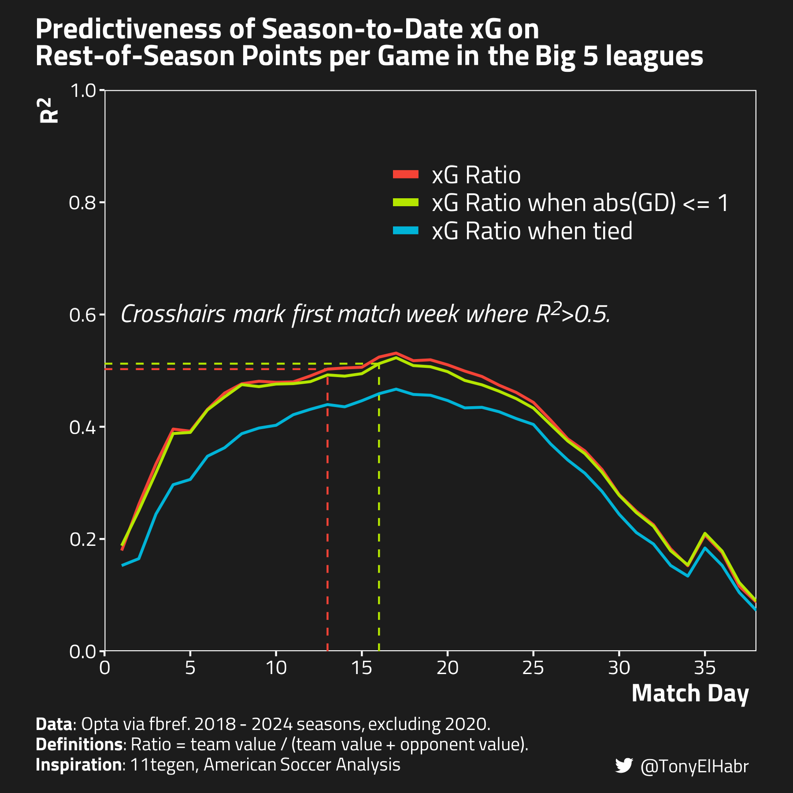
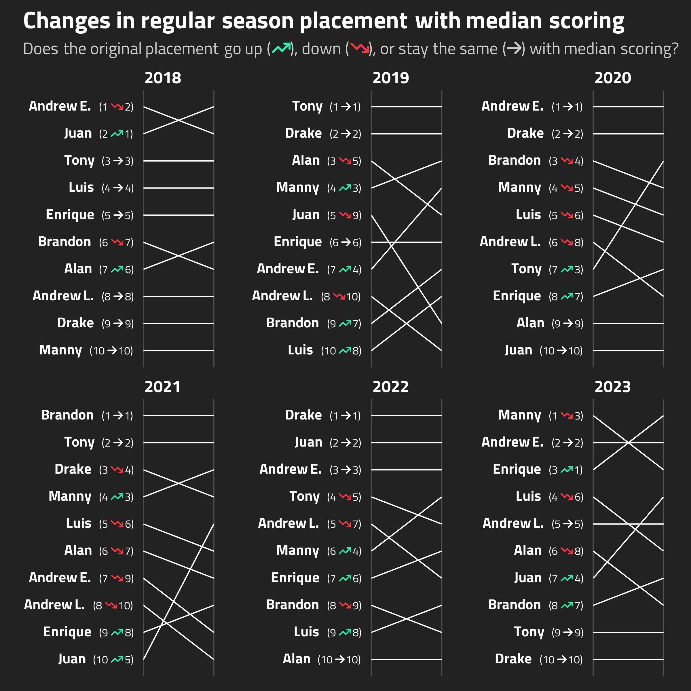

Tony’s Blog
About
Blog
Projects
Categories
All
(19)
football (american)
(2)
observablejs
(1)
python
(1)
r
(19)
soccer
(16)

Expected goals, gamestate, and predictiveness
r
soccer
Is expected goals (xG) in neutral gamestates a better predictor of future performance than xG across all gamestates?
Jun 19, 2024
Tony ElHabr
Estimating Shooting Performance Unlikeliness
r
soccer
Quantifying how unlikely a player’s season-long shooting performance is, factoring in their prior shot history
May 5, 2024
Tony ElHabr
Ball Progression is All You Need
r
soccer
observablejs
Identifying where passes (even incomplete ones) have the most positive impact on the pitch.
Apr 20, 2024
Tony ElHabr

Measuring manager performance in fantasy football
r
football (american)
All-play scores, optimal lineup choices, and more
Dec 31, 2023
Tony ElHabr
Should we account for team quality in an xG model?
r
soccer
Finnicking around (with an xG model) and finding out
Dec 29, 2023
Tony ElHabr
Game state with FBref data
r
soccer
Calculating expected goal difference (xGD) with respect to game state, using FBref data.
Oct 25, 2023
Tony ElHabr
Calibrating Binary Probabilities
r
soccer
Using calibration to improve classifier model performance
Sep 11, 2023
Tony ElHabr
Meta-Analytics for Soccer
r
soccer
To what extent does a state differentiate between players? How much does the stat’s value change over time?
Sep 8, 2023
Tony ElHabr
Measuring Shooting Overperformance in Soccer
r
soccer
Using empirical Bayes and the Gamma-Poisson conjugate pair
Aug 28, 2023
Tony ElHabr
xG Model Calibration
r
soccer
Evaluating Opta’s xG model performance with Brier skill score (BSS) and calibration curves
Feb 20, 2023
Tony ElHabr
What exactly is an “expected point”? (part 2)
r
soccer
Evaluating how we can use match outcome probabilites for season-long insights
Sep 5, 2022
Tony ElHabr
What exactly is an “expected point”? (part 1)
r
soccer
Calculating and comparing expected points from different expected goals sources
Sep 4, 2022
Tony ElHabr
Yet Another (Advanced?) Soccer Statistic
r
soccer
Quantifying soccer pass networks with weighted maximum cuts
Jan 31, 2022
Tony ElHabr
Tired: PCA + kmeans, Wired: UMAP + GMM
r
soccer
An Alternative to the Classic Approach to Dimension Reduction + Clustering
Jun 30, 2021
Tony ElHabr
Quantifying Relative Soccer League Strength
r
soccer
With Atomic VAEP
Jun 26, 2021
Tony ElHabr
Fantasy Football and the Classical Scheduling Problem
r
python
football (american)
Brute Force Programming Go Brrr
Jan 11, 2021
Tony ElHabr
Decomposing and Smoothing Soccer Spatial Tendencies
r
soccer
With data.table, reticulate, and spatstat
Oct 14, 2020
Tony ElHabr
Creating a Soccer Pitch Control Model
r
soccer
With S3 Classes and vctrs
Sep 23, 2020
Tony ElHabr
Making a Pull Request
r
A Newbie’s Guide to Making A Pull Request (for an R package)
Jan 20, 2019
Tony ElHabr
No matching items